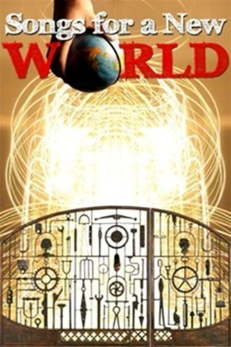
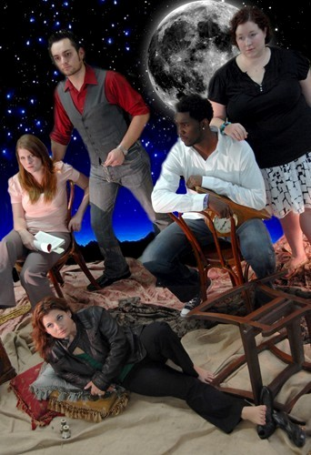
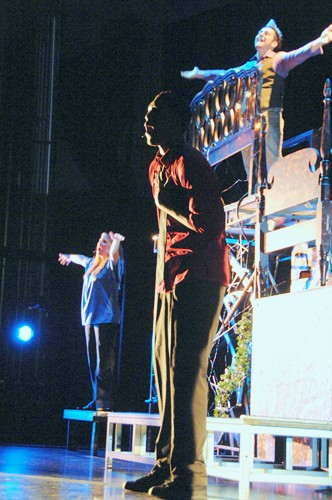
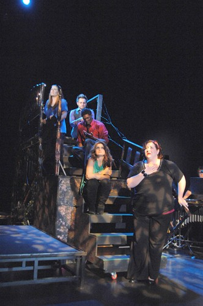
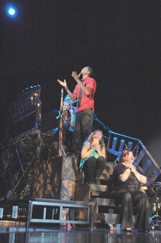
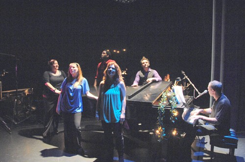

<html><span style="font-size:16pt;font-family:Trebuchet MS"><div id="bodyDiv" style="width:950px; background-color:#000000; text-align:center"><!DOCTYPE html PUBLIC "-//W3C//DTD XHTML 1.0 Transitional//EN" "http://www.w3.org/TR/xhtml1/DTD/xhtml1-transitional.dtd">
<html>
<head>
<meta content="text/html; charset=ISO-8859-1" http-equiv="content-type">

<link rel=stylesheet type="text/css" href="../../common.css" />
</head>

<body alink="blue" vlink="blue">
<a name="top"> </a>
<center>
<div id="pageBackgroundDiv" class="pageBackgroundStyle">
	<!--- begin common header -->
	
	<!--- end common header -->


	<!--- begin page body -->
	<div id="bodyDiv" style="width:600px; background-color:#000000;">
		<div class="pageTextStyle">
			<br/><blockquote>


			<!-- Begin page content block -->
			<center>
			<span style="font-family:Trebuchet;font-size:25px;font-weight:bold;color:#AFEEEE;">Kevin Johnson, Artistic Director<br><BR>PRESENTS<BR>


<br><br><Br>


<span style="font-family:Trebuchet;font-size:25px;font-weight:bold;color:#AFEEEE;">A Musical by
Jason Robert Brown<o:p></o:p></span></b></p>Directed by Kevin Johnson<BR>Associate Director/Choreographer<br>Debbie Runge<BR>Music Director, Khris Dodge<br><span style="font-family:Trebuchet;font-size:20px;font-weight:bold;color:#AFEEEE;"><br> Costume Designer, Debbie Runge &diams; Sound Designer, Jon Marbry &diams; Lighting Designers, Scot Gianelli and Zachary Ciaburri &diams; Set Designer, Kevin Johnson &diams; Scenic Design & Props, Christopher Pankratz &diams;<BR><BR><span style="font-family:Trebuchet;font-size:25px;font-weight:bold;color:#AFEEEE;">Featuring<br>Liz Cracchiolo, Charity LaPonsie,<br>Jody Mullen, Marcus Terrell Smith<br>and Jacinda Swinehart<br><br><br>
<p class=MsoNormal style='text-align:justify'><span style='font-size:16.0pt;
font-family:"Trebuchet MS"'>The world of change – in life, in family, in love –
is explored through music and character. Starting with the founding of <st1:country-region
w:st="on"><st1:place w:st="on">America</st1:place></st1:country-region> and
going past today, common themes are musically explored from different and
interesting angles. <br><br>Read about the origins of the piece here.<br> <a href="songs.html" target="Notes">Notes by Jason Robert Brown</a><br><br><p class=MsoNormal style='text-align:left'><span style='font-size:16.0pt;
font-family:"Trebuchet MS"'>Tucson Premiere, August 29-September 7, 2008. Pima West Center for the Arts Proscenium Theatre, 2202 W. Anklam Road<o:p></o:p></p>

<p class=MsoNormal style='text-align:left'>
Friday, September 5, 8pm<br>
Saturday, September 6, 8pm<br>
Sunday, September 7, 3pm<br></span><br><br>

Dress rehearsal!<br><br><br><br><br><br><br><br><br><br>

All three newspapers have printed previews and reviews.<br>Here are links to the stories:<br><a href="http://www.azstarnet.com/altds/pastframe/accent/255891" target="Arizona Daily Star">Arizona Daily Star</a><br><a href="http://www.tucsonweekly.com/gbase/Arts/Content?oid=oid%3A114978" target="Tucson Weekly">Tucson Weely</a><br><a href="http://www.tucsoncitizen.com/ss/theater/95714.php" target="Tucson Citizen">Tucson Citizen</a><br><br>

<a href="http://www.tucsonweekly.com/gbase/Arts/Content?oid=oid:114391" target="Tucson Weekly">Tucson Weekly</a><br>

<a href="http://www.azstarnet.com/accent/254956" target="Arizona Daily Star">Arizona Daily Star</a><br>

<a href="http://www.tucsoncitizen.com/daily/frontpage/95070.php" target="Tucson Citizen">Tucson Citizen</a><br>


<p>Click here for tickets. <a href=http://www.brownpapertickets.com/event/37976"> Brown Paper Tickets<br></a>
<br><br> 
<p><a href="Images/SongsForANewWorld.wmv">Click to see the PSA that is running<br> on five tv stations in Tucson.</a>
<br/><br/><br/>
</div>

</div>

</body>

</html>
<br><Br>
